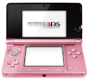
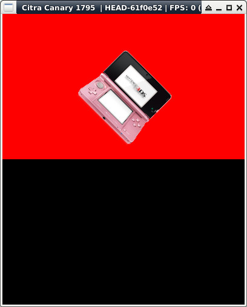

參考資訊：
https://libctru.devkitpro.org/index.html
https://github.com/devkitPro/3ds-examples
main.c
#include <citro2d.h>
#include <assert.h>
#include <string.h>
#include <stdio.h>
#include <stdlib.h>
#include <time.h>
int main(void)
{
C2D_Sprite spr = { 0 };
gfxInitDefault();
C3D_Init(C3D_DEFAULT_CMDBUF_SIZE);
C2D_Init(C2D_DEFAULT_MAX_OBJECTS);
C2D_Prepare();
C3D_RenderTarget *top = C2D_CreateScreenTarget(GFX_TOP, GFX_LEFT);
C2D_SpriteSheet spriteSheet = C2D_SpriteSheetLoad("sdmc:/3ds/sprites.t3x");
size_t numImages = C2D_SpriteSheetCount(spriteSheet);
C2D_SpriteFromSheet(&spr, spriteSheet, 0);
C2D_SpriteSetCenter(&spr, 0, 0);
C2D_SpriteSetPos(&spr, 200, 50);
C2D_SpriteSetRotation(&spr, C3D_Angle(0));
C2D_SpriteRotateDegrees(&spr, 45);
C3D_FrameBegin(C3D_FRAME_SYNCDRAW);
C2D_TargetClear(top, C2D_Color32(255, 0, 0, 255));
C2D_SceneBegin(top);
C2D_DrawSprite(&spr);
C3D_FrameEnd(0);
C2D_SpriteSheetFree(spriteSheet);
C2D_Fini();
C3D_Fini();
svcSleepThread(3000000000LL);
gfxExit();
return 0;
}
sprites.t3s
--atlas -f rgba8888 -z auto 1.png
1.png

Makefile
include $(DEVKITARM)/3ds_rules all: tex3ds -i sprites.t3s -H sprites.h -d sprites.d -o sprites.t3x arm-none-eabi-gcc -mword-relocations -ffunction-sections -march=armv6k -mtune=mpcore -mfloat-abi=hard -mtp=soft -I/opt/devkitpro/libctru/include -I/opt/devkitpro/portlibs/3ds/include/ -I/opt/devkitpro/portlibs/3ds/include/opus/ -I/opt/devkitpro/portlibs/3ds/include/SDL -D__3DS__ -c main.c -o main.o arm-none-eabi-gcc -specs=3dsx.specs -march=armv6k -mtune=mpcore -mfloat-abi=hard -mtp=soft main.o -L/opt/devkitpro/portlibs/3ds/lib -lopusfile -logg -lopus -L/opt/devkitpro/libctru/lib -lSDL_image -lSDL_mixer -lSDL_ttf -lSDL_gfx -lSDL -lfreetype -lbz2 -lpng -ljpeg -lz -lcitro2d -lcitro3d -lctru -lm -lstdc++ -o main.elf smdhtool --create "main" "devkitARM" "steward" /opt/devkitpro/libctru/default_icon.png main.smdh 3dsxtool main.elf main.3dsx --smdh=main.smdh clean: rm -rf main.o main.elf main.3dsx main.smdh sprites.d sprites.h sprites.t3x
編譯、執行
$ sudo docker run --rm -it -v $(pwd):/source nds-env /bin/bash root@c18881035cba:/source# make && exit $ citra main.3dsx
完成
